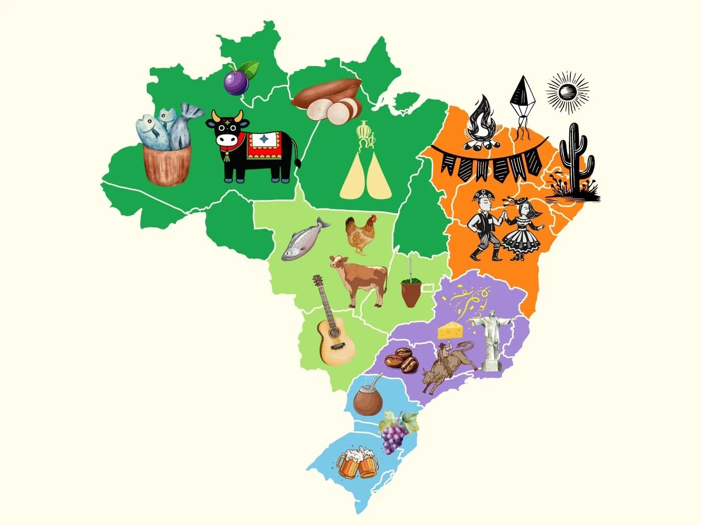

Venha aprender mais sobre o nosso folclore!
O folclore brasileiro é uma grande expressão de riquesa da nossa cultura nacional, ele reflete as tradições, costumes, lendas, celebrações, histórias e crenças que foram transmitidas de geração em geração do nosso povo.
Influencias de diversos povos sobre nossa cultura

O nosso folclore é muito rico e diverso, isso é possivel graças a grande influencia de diversos povos que contribuíram para a nossa cultura, desde os povos indígenas, que já habitavam estas terras há séculos, trouxeram histórias de criaturas míticas, como o Curupira e a Iara, além de danças e rituais ligados à natureza. Os europeus, em especial os portugueses, trouxeram contos populares e festividades religiosas, como a Festa Junina. Já os povos africanos, que chegaram ao Brasil como escravizados, contribuíram com danças, como o samba, e elementos religiosos presentes no Candomblé e na Umbanda. Esses foram alguns dos povos que mais influenciaram o Brasil, o que não quer dizer que somentes eles fizeram isso, pessoas do Japão e oriente médio além de muitos outros, são exemplos de povos que também influenciaram e influenciam o Brasil até hoje.
Por que estudar o Folclore?
Conhecer o nosso folclore é entender a própria cultura e brasilidade. Ele é muito mais do que só historias antigas fantásticas, personagens únicos e celebrações incriveis, é um mergulho em nossa cultura, que ao entendermos essas lendas, festas e tradições descobrimos como esses elementos estão conectados à nossa história e ao nosso modo de viver. O folclore também serve para preservar e valorizar nossas raízes as mémorias dos diversos povos que estão ou já estiveram aqui e contribuíram para a formação do Brasil.
Exemplos de Como o Folclore Está Presente no Nosso Dia a Dia
O folcore vai muito mais além doque somente história e lendas, ele está presente em toda nossa cultura e na de diversos locais ao redor do mundo, ele aparece na música, como o forró e o samba;
ele também é presente em festas, como o carnaval e o bumba meu boi;
Ele também está presente em nosso modo de falar e nas expressões do dia a dia, como girias, superstições e ditados populares.

A influência folclórica também pode ser vista na culinária, com pratos típicos que carregam histórias e tradições de diferentes regiões do país.

Ao olhar ao nosso redor, podemos perceber que o folclore está vivo, moldando a nossa forma de vivermos e celebramos nossa cultura. Por isso, conhecê-lo é muito importante e é uma forma de se reconectar com nossa identidade nacional.